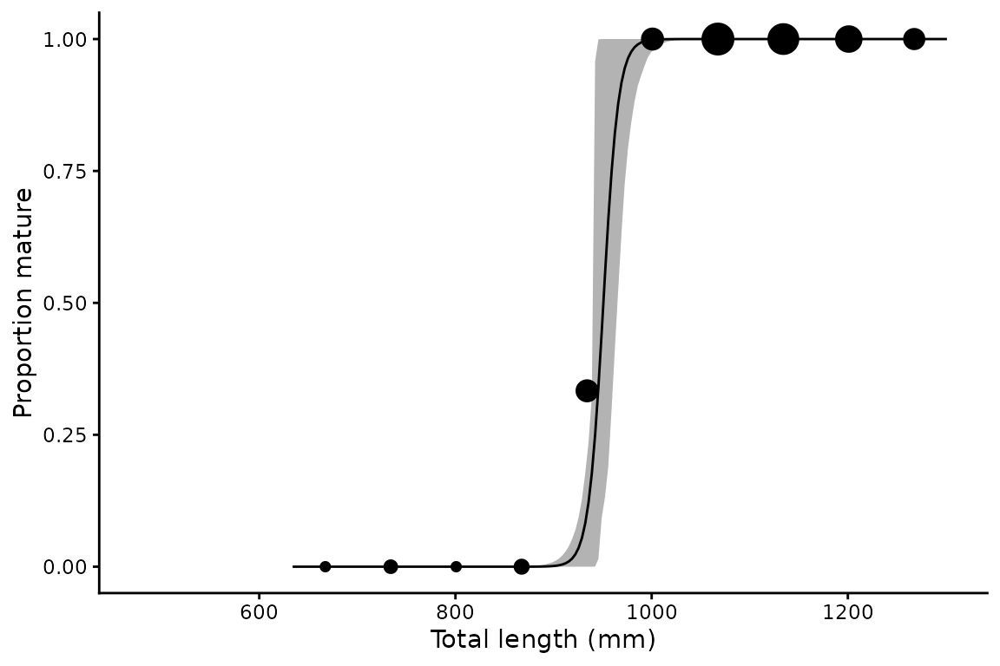
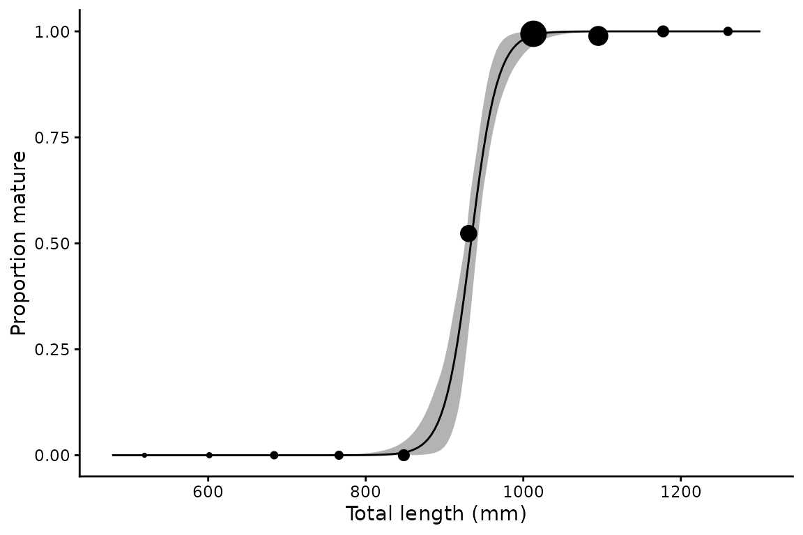
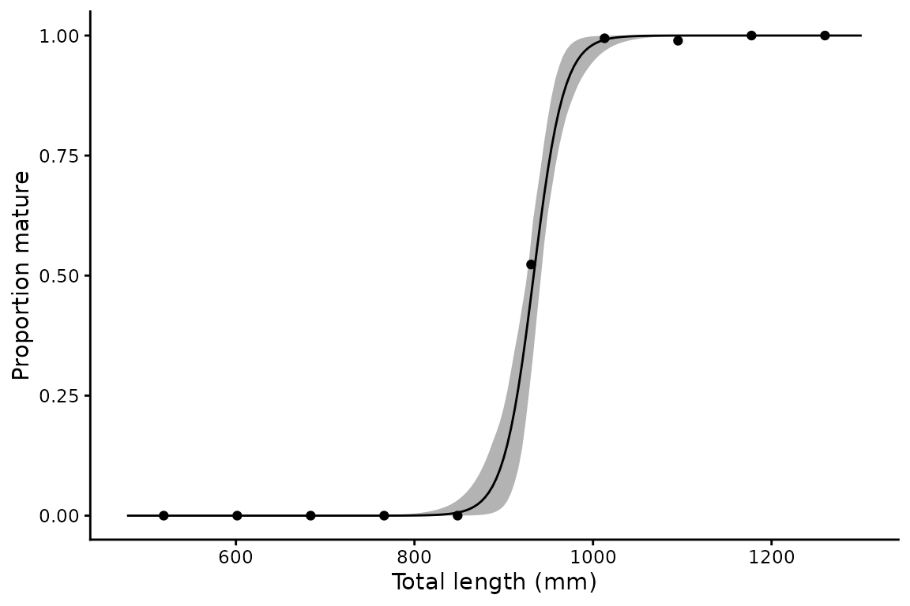
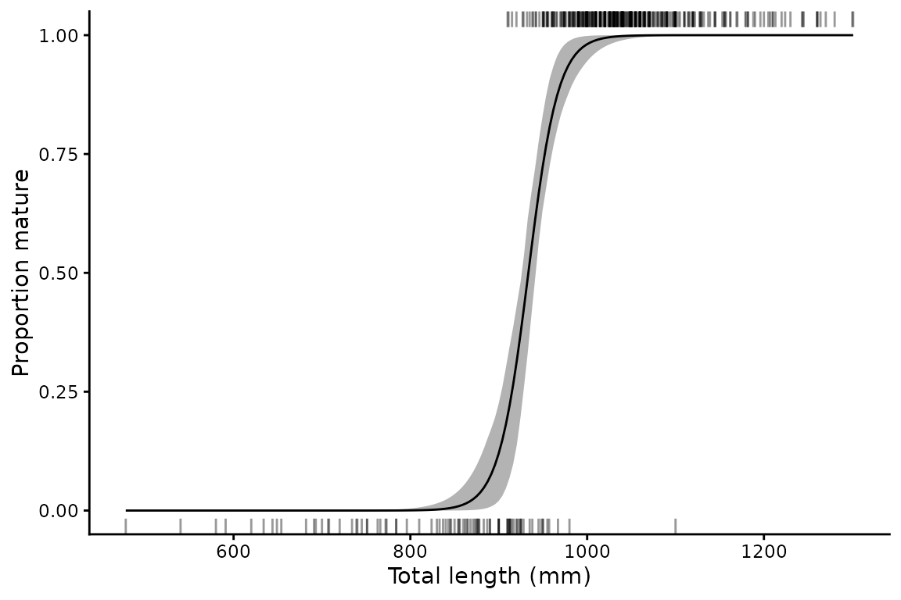
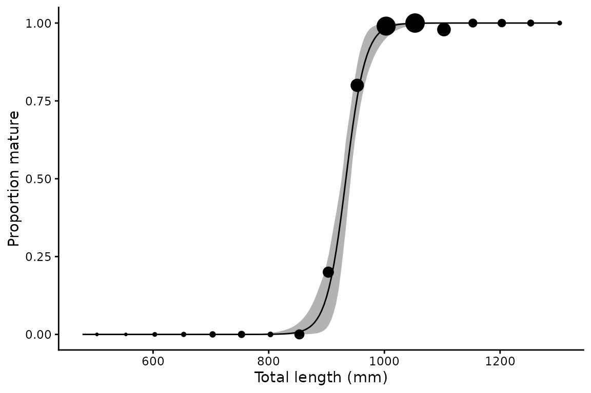
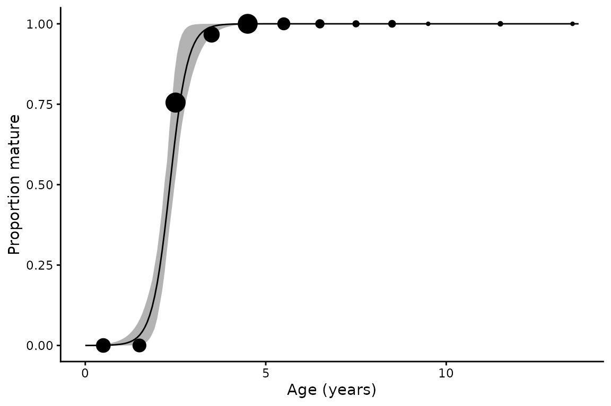

Length at maturity analysis
len-mat.RmdThe mat_fun() function fits a logistic regression of
binary maturity (0 = immature, 1 = mature) as a function of a continuous
predictor such as length or age:
Key outputs are and — the lengths (or ages) at which 50% and 95% of individuals are expected to be mature — with bootstrap confidence intervals.
Basic usage
library(mustelus)
#> Welcome to mustelus package
data(spottail)
lm50 <- mat_fun(maturity_stage, length, data = spottail, times = 200)
#> Warning: There was 1 warning in `mutate()`.
#> ℹ In argument: `L95_b = map_dbl(mod_b, ~(log(0.95/0.05) -
#> coef(.x)[[1]])/coef(.x)[[2]])`.
#> ℹ In group 0: .
#> Caused by warning:
#> ! There were 63 warnings in `mutate()`.
#> The first warning was:
#> ℹ In argument: `mod_b = map(splits, ~glm(mat ~ x, family = binomial, data =
#> rsample::analysis(.x)))`.
#> Caused by warning:
#> ! glm.fit: fitted probabilities numerically 0 or 1 occurred
#> ℹ Run `dplyr::last_dplyr_warnings()` to see the 62 remaining warnings.
summary(lm50)
#> # A tibble: 1 × 10
#> a b L50 L50_lower L50_upper L95 L95_lower L95_upper n N
#> <dbl> <dbl> <dbl> <dbl> <dbl> <dbl> <dbl> <dbl> <int> <int>
#> 1 -55.4 0.0594 934. 926. 942. 983. 965. 1002 430 341Grouping by sex
lm50_sex <- mat_fun(maturity_stage, length, sex, data = spottail, times = 200)
#> The categorical variable sex has 2 levels.
#> Warning: There were 4 warnings in `mutate()`.
#> The first warning was:
#> ℹ In argument: `L95_b = map_dbl(mod_b, ~(log(0.95/0.05) -
#> coef(.x)[[1]])/coef(.x)[[2]])`.
#> ℹ In group 0: .
#> Caused by warning:
#> ! There were 67 warnings in `mutate()`.
#> The first warning was:
#> ℹ In argument: `mod_b = map(splits, ~glm(mat ~ x, family = binomial, data =
#> rsample::analysis(.x)))`.
#> Caused by warning:
#> ! glm.fit: fitted probabilities numerically 0 or 1 occurred
#> ℹ Run `dplyr::last_dplyr_warnings()` to see the 66 remaining warnings.
#> ℹ Run `dplyr::last_dplyr_warnings()` to see the 3 remaining warnings.
summary(lm50_sex)
#> # A tibble: 3 × 10
#> a b L50 L50_lower L50_upper L95 L95_lower L95_upper n N
#> <dbl> <dbl> <dbl> <dbl> <dbl> <dbl> <dbl> <dbl> <int> <int>
#> 1 -55.4 0.0594 934. 926. 942. 983. 963. 998. 430 341
#> 2 -124. 0.131 951. 940. 965. 973. 942. 993. 118 97
#> 3 -51.1 0.0550 929. 920. 940. 983. 963. 1002 312 244Plotting
plot() returns a named list of ggplot objects. The
default shows binned observed proportions scaled by sample size.
p <- plot(lm50_sex)
p$f + xlab("Total length (mm)") + ylab("Proportion mature")
Plot styles
Three styles for raw data display are available:
# Proportions (default) — point size scaled by n per bin
plot(lm50, raw_data = "proportions")$Unspecified +
xlab("Total length (mm)") + ylab("Proportion mature")
# Point — same bins, uniform point size
plot(lm50, raw_data = "point")$Unspecified +
xlab("Total length (mm)") + ylab("Proportion mature")
# Rug — mature individuals on top, immature on bottom
plot(lm50, raw_data = "rug")$Unspecified +
xlab("Total length (mm)") + ylab("Proportion mature")
Adjusting bin width
The binwidth argument controls the width of bins in data
units (default is range/10):
plot(lm50, binwidth = 50)$Unspecified +
xlab("Total length (mm)") + ylab("Proportion mature")
Using age as the predictor
mat_fun() works with any continuous predictor — here
using age rather than length:
am50 <- mat_fun(maturity_stage, age_agree, data = spottail, times = 200)
#> Warning: There were 2 warnings in `mutate()`.
#> The first warning was:
#> ℹ In argument: `.fit = map(data, ~mat_fun_mod(.x))`.
#> ℹ In group 1: `grouping_var = Unspecified`.
#> Caused by warning:
#> ! glm.fit: fitted probabilities numerically 0 or 1 occurred
#> ℹ Run `dplyr::last_dplyr_warnings()` to see the 1 remaining warning.
summary(am50)
#> # A tibble: 1 × 10
#> a b L50 L50_lower L50_upper L95 L95_lower L95_upper n N
#> <dbl> <dbl> <dbl> <dbl> <dbl> <dbl> <dbl> <dbl> <int> <int>
#> 1 -9.50 4.05 2.35 2.19 2.48 3.07 2.62 3.38 211 153
plot(am50, binwidth = 1)$Unspecified +
xlab("Age (years)") + ylab("Proportion mature")
Output structure
Like len_weight(), the result is a nested tibble with
named list columns per group:
# Bootstrap L50 estimates for all individuals
quantile(lm50_sex$mods[["f"]]$fitted.values)
#> 0% 25% 50% 75% 100%
#> 2.220446e-16 9.986775e-01 1.000000e+00 1.000000e+00 1.000000e+00
# Predicted maturity curve for females
head(lm50_sex$preds[["f"]])
#> x mat lower upper
#> 1 634.0000 2.220446e-16 2.220446e-16 5.346166e-13
#> 2 637.3518 2.220446e-16 2.220446e-16 7.193201e-13
#> 3 640.7035 2.220446e-16 2.220446e-16 9.678395e-13
#> 4 644.0553 2.220446e-16 2.220446e-16 1.302224e-12
#> 5 647.4070 2.220446e-16 2.220446e-16 1.752143e-12
#> 6 650.7588 2.220446e-16 2.220446e-16 2.357515e-12